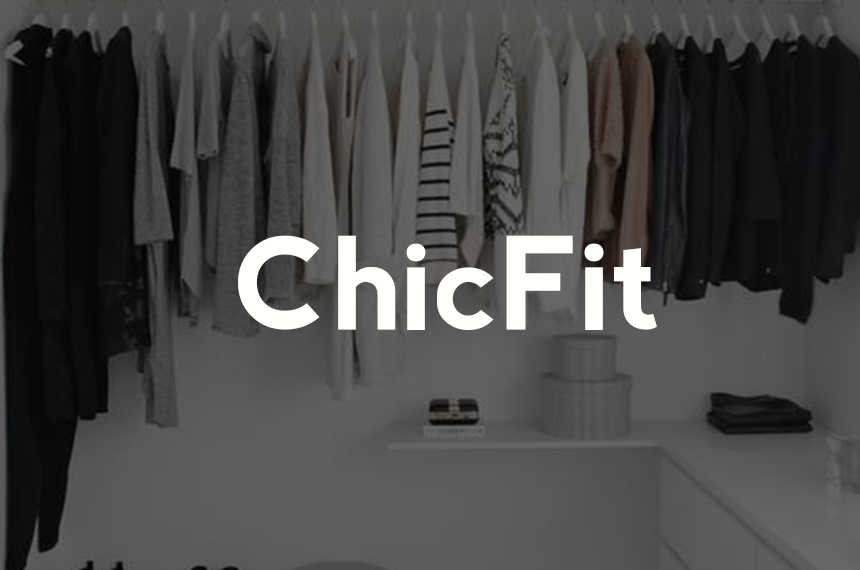
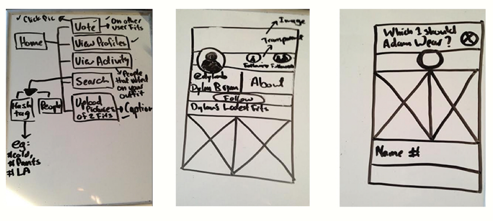
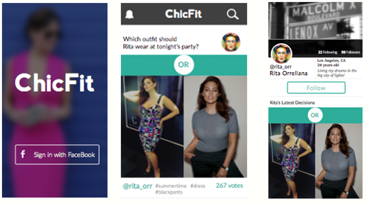
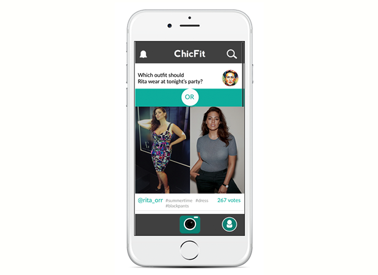

Why ChicFit?
Social apps help us connect with friends, find restaurants and create relationships. Yet there's nothing on the market to help people with the stress of choosing outfits in a way that entertains at the same time. ChicFit was another personal project I designed that was inspired by my girlfriend's indecisiveness while choosing outfits. I'm constantly bombarded with questions when we go out like, "Does this look good?", "These ear rings or these ones?" And then I'd see my female friends Snapchatting pictures with the same questions! Coming up with the concept was fun, but it really got me curious to see what kind of solution I could actually come up with to solve this millenial dillema...
Sketches
Usually I begin personal projects by thinking about a problem I want to solve. This time the problem was that friends were relying on Snapchat to get answers to their questions. I also had the assumption that people usually group text questions about style based decisions. Living in a culture where people are driven off dopamine fueled likes and responding back to texts on their own time, I began to see the possibilities of how ChicFit could work.
So I sketched out and ideated the user requirements of the app. While designing ChicFit I wanted users to be able to do several things:
- The ability to upload pictures
- Vote on other users pictures
- View a tallied percentage of votes for style based decisions
- View other user profiles
- View personal notifications
- And be able to search for styles by hashtag or name

Wireframes
After having an idea of what features I wanted to implement in to the app while white boarding, I moved on to creating high fidelity wireframes of different views in Sketch. I then used Marvel App to create a clickable prototype and check if any of the interactions didn't make sense.
Pixel Perfecting
During the wireframing process I learned that visual imagery was an important aspect of the app. The idea was to create an experience that could be in the realm of other apps like Rent the Runway, Stylect and Wishbone. I also went through several color palletes while looking for a neutral, but fun and elegant feel that could appeal to women and men.
Iterate
The app design is simple, but there is always room for improvement. Since the app is designed to appeal to younger demographics, I thought the use of icons without descriptive text could be enough to articulate interactions. One of the more important things I'd like to continue improving is the use of elegant typography. Overall, my goal was to create a product that was seamless to use, but easy enough to learn at the same time.